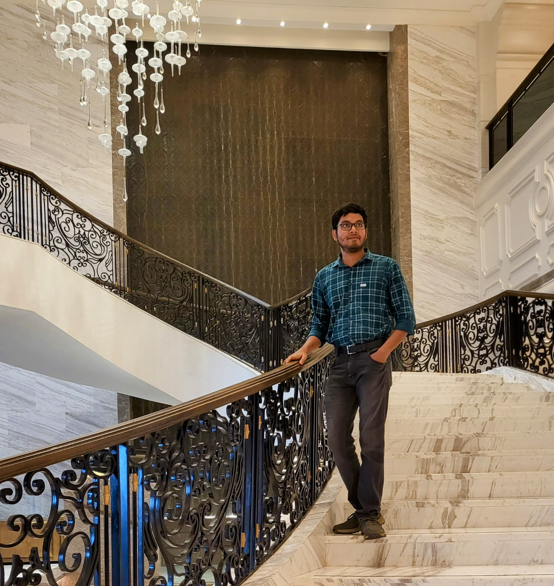

I am a Junior Research Fellow at the Advanced Computing and Microelectronics Unit (ACMU), Indian Statistical Institute, Kolkata.
I work in computational geometry, mostly on problems of visibility. How few guards are needed to see all of a polygon? This is the art gallery problem. Its dual, the witness set problem, asks how many points can be placed so that no single guard sees two of them. My recent work gives exact and efficient algorithms for both questions on weak visibility polygons, the polygons that are entirely visible from one of their edges.
Here is my curriculum vitae.

SMContact
| shouvik.math [at] gmail [dot] com | |
| Affiliation | Advanced Computing and Microelectronics Unit Indian Statistical Institute 203 B. T. Road, Kolkata 700108 West Bengal, India |
Research interests
Computational geometry · visibility and art gallery problems · witness sets · exact and output-sensitive algorithms · geometric intersection graphs
News
- Sep 2026 New preprint on arXiv: Witness Set in Weak Visibility Polygons is Polynomial-Time Solvable.
- Sep 2026 New preprint on arXiv: Perfectly Guarding Straits: Exact Algorithms for Weak Visibility Polygons.
2026
-
Witness Set in Weak Visibility Polygons is Polynomial-Time Solvable.
Udvas Das, Shouvik Mondal, Sasanka Roy.
Preprint, arXiv:2609.24460, 2026.
arXiv
PDF
The first exact polynomial-time algorithms for the witness set problem in weak visibility polygons. One algorithm handles the case where witnesses must be chosen from a given set of m points and runs in O(n + m log(n+m)) time; the other handles witnesses placed anywhere in the polygon.
@misc{das2026witness, title = {Witness Set in Weak Visibility Polygons is Polynomial-Time Solvable}, author = {Das, Udvas and Mondal, Shouvik and Roy, Sasanka}, year = {2026}, eprint = {2609.24460}, archivePrefix = {arXiv}, primaryClass = {cs.CG} } -
Perfectly Guarding Straits: Exact Algorithms for Weak Visibility Polygons.
Shouvik Mondal, Udvas Das, Sasanka Roy.
Preprint, arXiv:2609.15510, 2026.
arXiv
PDF
Guards may stand only on the base edge of a weak visibility polygon. If they cover the boundary they also cover the interior, so the problem becomes one-dimensional. We give an exact, output-sensitive algorithm, and each solution it returns comes with a witness set of the same size that proves it optimal. We also show a tight Θ(n log n) bound for vertex guarding and give faster algorithms for altitude terrain guarding.
@misc{mondal2026straits, title = {Perfectly Guarding Straits: Exact Algorithms for Weak Visibility Polygons}, author = {Mondal, Shouvik and Das, Udvas and Roy, Sasanka}, year = {2026}, eprint = {2609.15510}, archivePrefix = {arXiv}, primaryClass = {cs.CG} }
Coauthors: Udvas Das, Sasanka Roy.
See also my arXiv listing.
At a glance
Curriculum vitae
The CV will appear here once CV.pdf is added to the website.